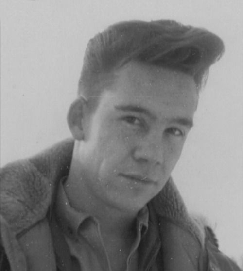
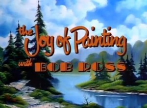

Bob Ross
Puno ime: Bob Norman Ross
Zanimanje: Umjetnik
Poznat po: The joy of painting
|
Bob Ross
Puno ime: Bob Norman Ross
|
Rani život
Rođen 29.10.1942. u Floridi
|
 |
|  |
Umjetnost
The Joy of Painting je
televizijska emisija koju je Bob |
|
Za neke citate Boba Rossa kliknite na sliku: |